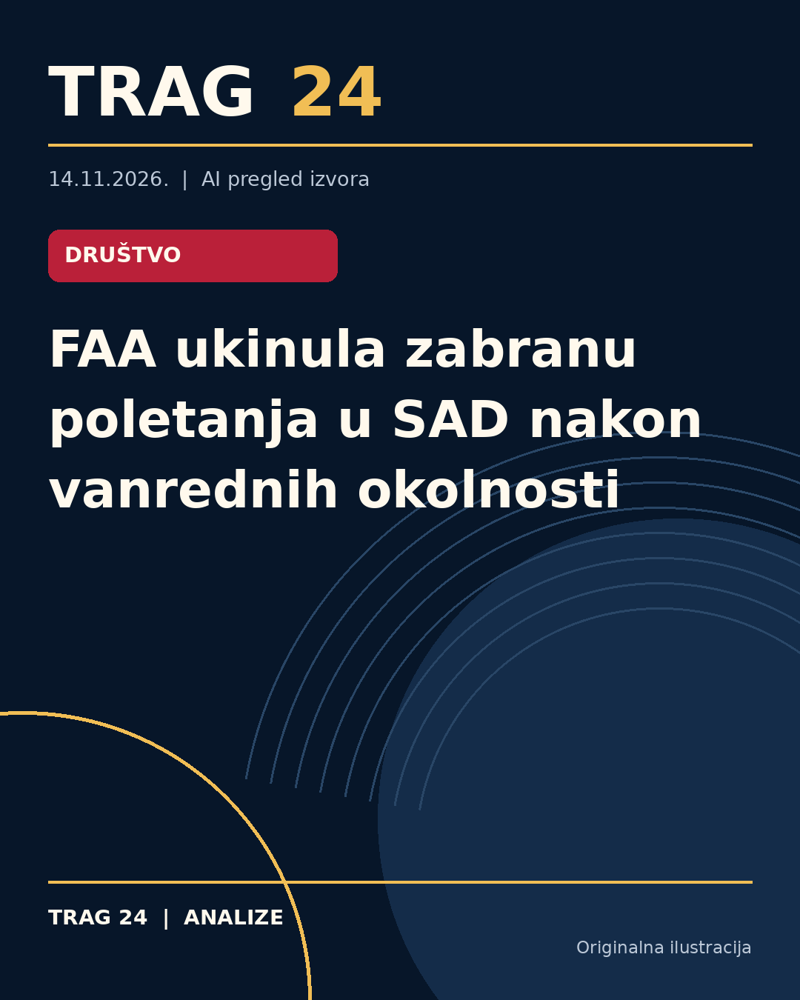

FAA ukinula zabranu poletanja u SAD nakon vanrednih okolnosti

ŠTA SE DOGODILO
Federalna uprava za vazduhoplovstvo (FAA) SAD ukinula je zabranu poletanja aviona na teritoriji cele zemlje. Ova mera bila je uvedena kao odgovor na vanredne okolnosti koje su dovele do potpune obustave avio-saobraćaja na svim američkim aerodromima.
HRONOLOGIJA
Zabrana je uvedena u četvrtak, kada je FAA naredila nacionalni "ground stop" – zaustavljanje poletanja na svim aerodromima. Tek u petak uveče, oko 22 časa po istočnom vremenu (ET), FAA je saopštila da je nakon detaljnog testiranja sistema situacija stabilna i da je dozvoljeno nastavljanje letova iz SAD. Pre uvođenja zabrane, ujutru su vlasti poslale pismo Kongresu sa zahtevom za dodatnih 30 milijardi dolara za modernizaciju vazduhoplovne infrastrukture.
ŠTA NAVODE IZVORI
Oba izvora, Novosti i Telegraf, citiraju zvanično saopštenje FAA u kojem se navodi da su sistemi provere pokazali pouzdanost, te da je bezbednost putnika prioritet. Takođe, prenose da je zabranjena mera poticala od "vanrednih okolnosti" o čijoj prirodi FAA nije detaljno govorila. Predsednik Donald Tramp je telefonom razgovarao sa senatorom Erikom Šmitom ističući potrebu brzog donošenja zakona o modernizaciji kontrole zračnog saobraćaja, za šta se traže dodatna sredstva.
ŠTA JE POTVRĐENO
Potvrđeno je da je zabrana poletanja uvedena na teritoriji svih američkih aerodroma i da je ista ukinuta nakon nekoliko sati. FAA je javno saopštila da je bezbednost putnika prioritet i da je nastavak letova dozvoljen nakon temeljne provere sistema. Putnicima se savetuje da prate informacije svojih avio-kompanija zbog mogućih kašnjenja ili promena u rasporedu letova.
ŠTA NIJE POTVRĐENO
Nije precizirano šta je konkretnо uzrokovalo vanredne okolnosti i uvođenje zabrane poletanja. Nema potvrđenih detalja o tehničkim problemima ili drugim faktorima koji su doveli do obustave letova. Takođe, izveštaji ne navode kakvu tačno su ulogu u ovom događaju imali eventualni sigurnosni incidenti ili drugo tehničko stanje aerodromske infrastrukture.
ŠTA OSTАJE OTVORENO: Ostaje nejasno da li će zahtev za dodatnih 30 milijardi dolara za modernizaciju infrastrukture direktno uticati na sprečavanje sličnih problema u budućnosti. Takođe, ostaje nepoznato da li će u narednom periodu biti uvedene dodatne mere za unapređenje bezbednosti i stabilnosti vazdušnog saobraćaja u SAD.
Izvori
- https://www.novosti.rs/planeta/svet/1671012/sad-poletanje-aviono-zabrana-ukinuta-amerika-najnovije-vesti
- https://www.telegraf.rs/vesti/svet/4432861-zabrana-poletanja-u-sad-je-ukinuta-putnicima-se-savetuje-da-pre-puta-provere-let
Ova analiza je pripremljena uz pomoć veštačke inteligencije na osnovu javno dostupnih izvora. Navodi izvora nisu nužno nezavisno potvrđeni.